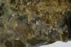

|
|
(For further information on spectroscopy, see:
http://speclab.cr.usgs.gov)
TITLE: Andradite WS487 Garnet DESCRIPT
DOCUMENTATION_FORMAT: MINERAL
SAMPLE_ID: WS487
MINERAL_TYPE: Nesosilicate
MINERAL: Andradite (Garnet group)
FORMULA: Ca3(Fe+3)2(SiO4)3
FORMULA_HTML: Ca3Fe+32(SiO4)3
COLLECTION_LOCALITY: Stanley Butte, Arizona
ORIGINAL_DONOR: Wards Scientific
CURRENT_SAMPLE_LOCATION: USGS Denver Spectroscopy Laboratory
ULTIMATE_SAMPLE_LOCATION: USGS Denver Spectroscopy Laboratory
SAMPLE_DESCRIPTION:
Forms series with Grossular and with Schorlomite.
Dry sieve to < 250 µm
Weak spectral features at 2.2 µm and 1.4 µm indicate presence of OH bearing mineral. Bands in the visible appear representative of andradite. Roger N. Clark
IMAGE_OF_SAMPLE:

END_SAMPLE_DESCRIPTION.
XRD_ANALYSIS:
40 kV - 30 mA, 7.3-9.5 keV
File: andr487.out, *.mdi (smear mount on quartz plate)
References: Borg and Smith (1969), JCPDS #10-288, DHZ, v. 1a (1982),
Huebner's reference patterns
Found: Garnet
Comment: Very sharp peaks indicate high degree of crystallinity and
suggest compositional homogeneity. The garnet has ao=12.02 Angstroms,
consistent with andradite and uvarovite compositions; based on
yellowish brown color,the garnet is andradite-rich.
J.S. Huebner, J. Pickrell, T. Schaefer, written communication 1994
END_XRD_ANALYSIS.
COMPOSITIONAL_ANALYSIS_TYPE: None # XRF, EM(WDS), ICP(Trace), WChem
COMPOSITION_TRACE: None
COMPOSITION_DISCUSSION:
None
END_COMPOSITION_DISCUSSION.
MICROSCOPIC_EXAMINATION:
Optical examination gives the following mineral mode:
99.5 vol% andradite
0.5 vol% opaques
Mostly pure highly fractured andradite grains with opaque inclusions and single opaque grains. Uniform grain size distribution with an avg. grain size of 175µm. G. Swayze Grains mostly of tabular shape.
END_MICROSCOPIC_EXAMINATION.
SPECTROSCOPIC_DISCUSSION:
END_SPECTROSCOPIC_DISCUSSION.
SPECTRAL_PURITY: 1b2b3b4_ # 1= 0.2-3, 2= 1.5-6, 3= 6-25, 4= 20-150 microns
| LIB_SPECTRA_HED: | where | Wave Range | Av_Rs_Pwr | Comment |
|---|---|---|---|---|
| LIB_SPECTRA: | splib04a r 401 | 0.2-3.0µm | 200 | g.s.= |
| LIB_SPECTRA: | splib05a r 1024 | 0.2-3.0µm | 200 | g.s.= |
| LIB_SPECTRA: | splib06a r 2330 | g.s.= | ||
| LIB_SPECTRA: | splib06a r 2342 | g.s.= |
{kind=link}